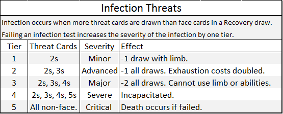

Health and Wounds
Lose all of your health and your character dies. Health is reduced by incurring Wounds accumulated from unmitigated damage taken.
Wounds are exceptionally difficult to recover and should be avoided at all costs, thus making defensive strategy an important aspect to this game.
When wounded for more than 25% of the player’s total health pool, infection becomes a risk. This risk increases for each 25% of health missing.
See Recovering Health and Infection.
Recovering Health
Characters naturally heal wounds when resting and recovering. This value is determined by the character’s Recovery value.
The Recovery value represents the number of cards drawn when recovering from wounds.
It also serves as a constant for Exhaustion Recovery calculations (See Exhaustion and Exhaustion Recovery).
The Endurance attribute increases the Recovery value.
A recovery test can be failed, resulting in infection (See Infection).
Resting conditions, potions, poultices, healing abilities, symbionts, technology, and artifacts
can aid the recovery process by reducing the risk of infection and increasing the Recovery value.
Abilities that heal wounds are extremely rare and powerful.
Avoiding and mitigating damage is the best strategy to survive.
Recovery Values
Draw cards equal to your Recovery value. Add the cards together for the total amount recovered using the following values.
- 2-10: Value of the cards drawn.
- Face Cards: 10.
- Ace: 20.
- Joker: Full Recovery.
Infection
Infection is a system designed to add immersion and consequence to violent encounters. Feel free to exclude this mechanic based on your group's playstyle and desires.
Infection can occur when recovering from Wounds and failing the recovery test.
Failing a stage one threat: when drawing for Recovery, if more 2s are drawn than face cards, a character suffers from infection.
Infection risk increases by one threat tier for every 25% of the health pool missing to Wounds.
Infections always advance only one threat stage when failed, five total failures must occur before a character dies to infection.
Each face card drawn (greater than number of threat cards drawn) reduces an infection by one stage.
Sterile treatment, wound dressing, and locations can reduce these threat stages.
Filthy conditions, physical stress, delayed treatment, and other such factors can increase the threat stages of Infection.
No health is recovered when a recovery test is failed.
Drawing threat cards again, without drawing face cards to counteract them, will advance the Infection an addiitonal stage.
See Infection s table.
Players suffering from Infection must gain Immunity and Fully Recover before Infection deficits cease.

Example:
A character with 20 health suffered 6 damage in Wounds, leaving ~70% of their health remaining.
The character has a Recovery value of 1.
The character eats and sleeps, healing 1 draw worth of Wounds with a stage 1 risk of Infection.
The player draws a card, if the card is a 2, the character develops an Infection and suffers detrimental effects (See the Infection Table above).
In this case, they would suffer -1 draw when using the infected limb.
If the player draws a 3 or higher, the character instead recovers the face value of health and avoids infection (jack, queen, and king are all 10 health; ace is 20 health).
If for instance, the character had instead suffered 10 damage, leaving 50% health remaining, the infection threat would be at stage 2 and would occur on 2s and 3s.
Drawing either a 2 or a 3 would result in a stage 2 infection suffering -1 to all draws and a penalty to Exhaustion cost.
If the character had a higher Recovery value and thus multiple Recovery draws, drawing face cards counteracts an equal number of threat cards when drawing for Infection Threats.
Infection Recovery and Immunization
Immunization
When a character is suffering from Infection, they must Immunize before they can Fully Recover.
To Immunize to an infection, the character must draw more face cards than threat cards on a Recovery draw.
Full Recovery
When a character is Immunized, drawing threat cards no longer advances the infection, but the character still suffers the detrimental effects of the infection.
The infection must be reduced to stage 0 before fading.
An Infection stage is reduced by one for each face card the player draws greater than threat cards for their current stage.
Fatigue
Fatigue in incurred when damage is mitigated by Damage Mitigation.
By default, fatigue is 200% of a character's maximum health pool plus 200% of their Brains value.
If Fatigue reaches zero, the character succumbs to exhaustion and falls unconscious.
Fatigue is fully recovered after a short rest (hour or so) and is often recoverable by powers, items, and potions.
Taking cover in combat for a full round (not attacking or being attacked) will allow a character to perform a Recovery draw to replenish Fatigue.
Damage Mitigation
Amount of damage converted to Fatigue damage each hit.
This allows heavily armored characters to take hits and recover fatigue without incurring cumulative Wounds.
Very effective against low damage rapid attacks, as each hit receives its own mitigation calculation.
Less effective against slow heavy damage attacks. Unmitigated damage results in Wounds.
Attributes
There are three primary attributes: Brawn, Brains, and Bravado.
Brawn is associated with physical feats, Brains with mental feats, and Bravado with social feats.
These attributes are the backbone of a character.
Uses:
- Primary form of character advancement. Attributes are granted for completing a goal, or failing horribly.
Attributes are distributed much in the same way "experience" would be granted in other games.
- Primary resource for most actions.
Attributes are recoverable resources used to perform feats.
They are Exhausted with use and Recovered through Exhaustion Recovery draws.
- Grants higher Statistic scores.
Statistic scores are the primary means of unlocking Knacks and are extremely important to Skills.
- Can be wagered in Combat and Tasks for altered outcomes. Wager attitional Attribute Exhaustion for additional draws in the event of a success.
Brawn